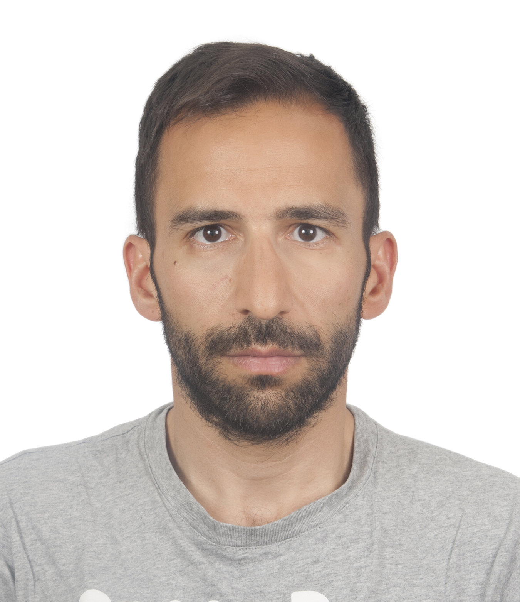
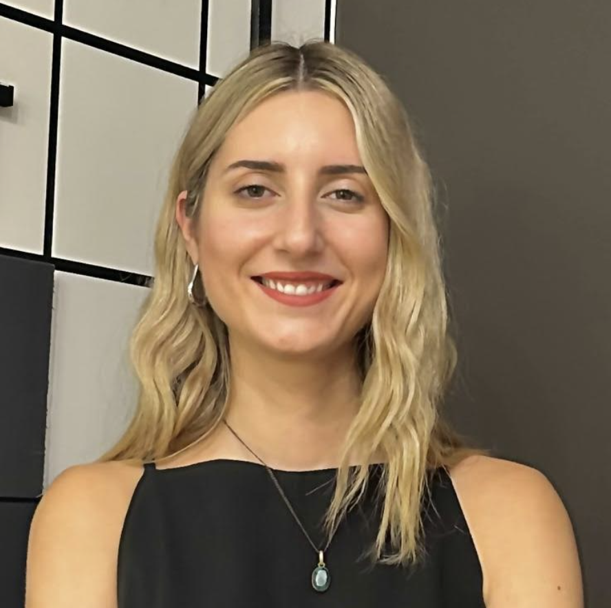
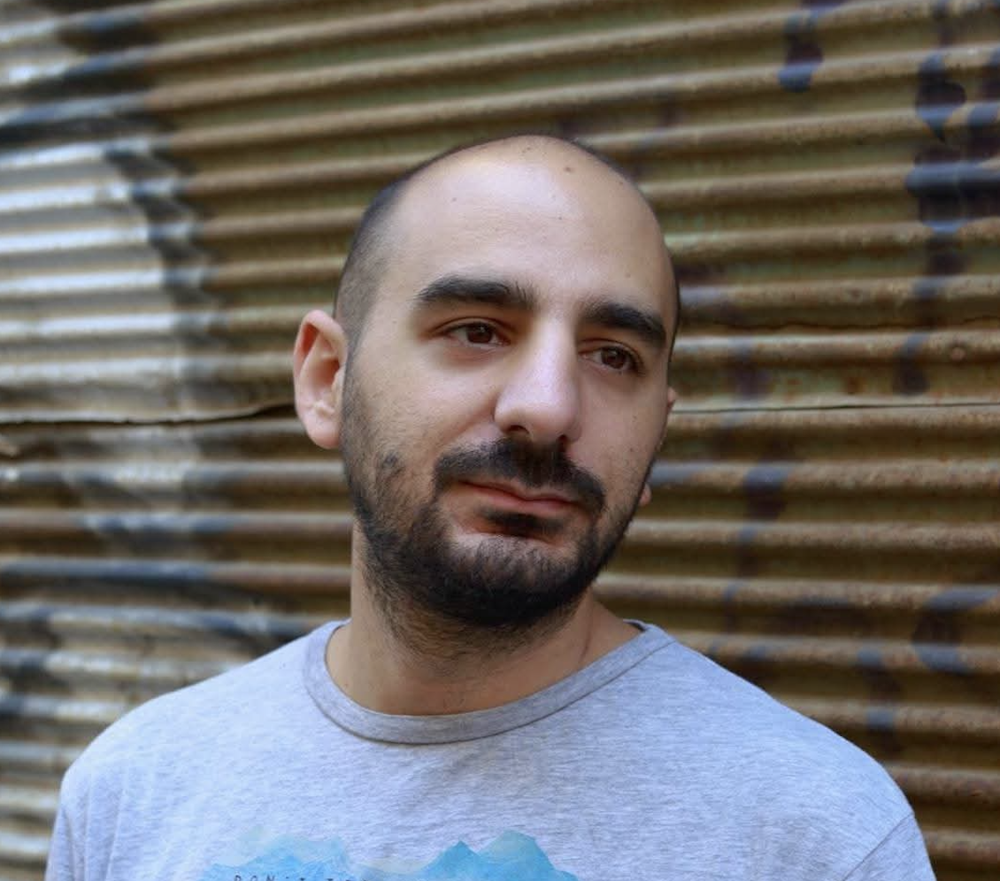
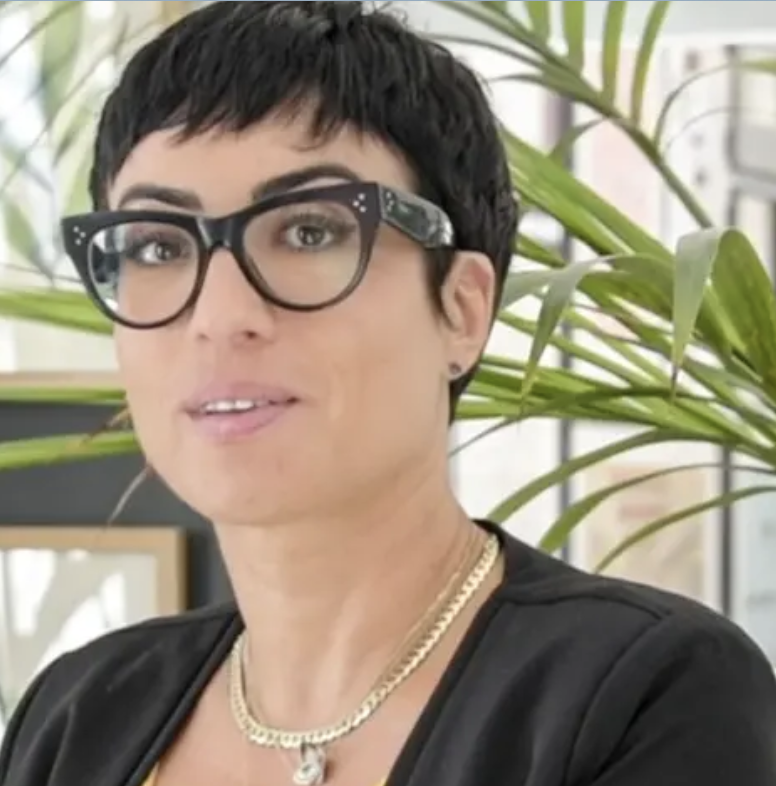
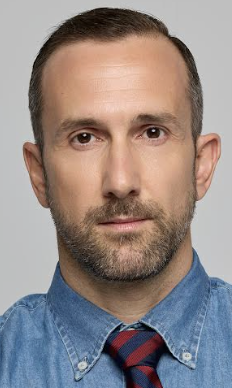

T2T – Tinos to Tinos
A one-month, non-profit sunset pop-up canteen supporting healthcare in Tinos. Every sunset is a contribution. Every purchase strengthens the Tinos' healthcare infrastructure.
What We Do
T2T is a one-month, non-profit sunset pop-up canteen operating in Kardiani, Tinos, next to the municipal road above Agios Petros Beach.
- Dates: 18 July – 18 August 2026 (30 days)
- Hours: 17:00 – 22:00 (sunset-focused)
- Menu: 3 signature sandwiches + 5 cocktails
- Local-first: collaboration with Tinian suppliers & producers
- Impact: 100% of capital and profit donated to Tinos' healthcare infrastructure
Transparency Commitment
- All finances tracked and independently audited
- 100% of capital and profit donated to the Tinos Health Centre
- Public impact report published after the project
Why We Do It
The development model of many Greek islands relies heavily on tourism and real estate. While this generates short-term activity, it does not always sustain permanent population, community resilience, or quality of life.
- Islands need depth: year-round life, not only summer peaks.
- Infrastructure matters: healthcare and education are foundational.
- We start with healthcare: essential, urgent, non-negotiable.
The core idea
Strong healthcare allows residents to feel safe, families to stay, and communities to remain resilient beyond the summer season.
Who We Are

Panagiotis Andreadis
Naval Architect & Mechanical Engineer, connected to Tinos for 25+ years through Ormos Isternion and the family aparthotel Tinos Treasures. Passionate about cooking, hard work, and giving back — investing personal capital, donating labour, and working behind the counter himself.

Eirini Kouti
Senior PR professional shaped at one of Greece’s largest firms. Specialist in strategic PR, crisis management, and corporate communications. Holds an MA in International Relations & European Studies and an LLB. Ensures clarity, credibility, and trust.
Asimina Lazaridou
Lawyer with an MSc in Law & Informatics and a creative path in photography and storytelling. Deeply socially and environmentally sensitive, with strong volunteer spirit. Leads authentic, minimal, human communication.

Vasilis Dendrinos
Owner of Morning Sweetie (Kypseli, Athens) and long-time hospitality professional. Trained as a geologist with a systems mindset. Involved in social initiatives such as Break the Couch and ROES. Ensures smooth operations and maximises profits for health impact.

Aggeliki Evripioti
Architect and partner at Evripiotis Architects, with a Master’s in Urban Design from Harvard GSD and broad international experience. Permanent Cyclades resident who understands island infrastructure needs first-hand. Leads donor relations and partnerships to strengthen healthcare in Tinos.

Panos Lois
Panos Lois brings more than two decades of experience in Human Resources across the FMCG, Retail and Shipping sectors. Holding a degree in Economics and an MBA, he is People & Culture Manager – Supply Chain & Support Functions for Greece and Cyprus at Coca-Cola HBC. At T2T, he coordinates more than 35 volunteers from four countries, helping create the collaborative spirit that brings the project to life.
How You Can Help
- Visit the canteen: every purchase supports healthcare in Tinos.
- Donate funds and/or time: €23,000+ raised; €10,000 more needed for launch.
- Collaborate: in-kind equipment, food & beverage supplies, design/printing, pro services.
- Share the story: press, media, and visitors help amplify the impact.
In-Kind Contributions
We welcome in-kind support including food & beverage supplies, equipment (canteen, refrigeration, smoker, POS, lighting), design, printing, or professional services. In-kind contributors receive recognition equivalent to the market value of their contribution.
Donor Tiers
1) Friend of T2T
For individuals supporting the project and the Tinos Health Centre.
- Name listed on website supporters page
- Name included in final audited impact report
- Digital “Friend of T2T” supporter badge
- Thank-you mention on Instagram Stories
2) Supporter of Tinos Health
For individuals or small businesses aligned with social impact.
- All of the above
- Name/small logo on website + printed impact leaflet
- Invitation to opening sunset event
- Limited edition tote bag + sticker pack
3) Community Partner
For brands and professionals supporting local infrastructure.
- All of the above
- Logo on canteen supporter panel (inside) + printed menu
- Mention in press & media communications
- Signed A4 art print + 2 tote bags
- Dedicated Instagram post + stories
4) Main Supporter
For substantial contributors enabling the project.
- All of the above
- Prominent logo on canteen exterior + interior wall
- Logo on staff aprons + selected merch
- Dedicated IG post + Highlight + press release mentions
- Invitation to private sunset thank-you gathering
- Limited edition supporter T-shirt
5) Founding Donor
For major supporters who help make T2T possible.
- Top-tier recognition across canteen, website, and printed/digital materials
- Exclusive Founding Donor decal on the canteen
- Dedicated on-site acknowledgement
- Full Founding Donor merch set: T-shirt, tote bag, apron, signed A4 art print, sticker pack
- Permanent mention in the final audited impact report
Google Location
Kardiani, Tinos
Next to the municipal road above Agios Petros Beach. Click below to open Google Maps.